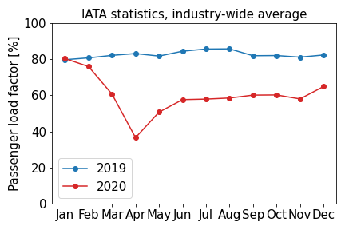

No one needs telling that the number of flights reduced massively in 2020. Back in spring it was practically a novelty to see a plane in the sky. However, despite the huge extent to which airlines cut their services, passenger numbers dropped even more.
The passenger load factor indicates how full a plane was. All seats filled with passengers equals 100% load factor. It varies from airline to airline, but in 2019 the typical passenger load factor was above 80%. Using IATA statistics , we can compare passenger load factors from 2019 with 2020. After a normal January, industry-wide average passenger load factors decrease dramatically to below 40% in April. Around summer time figures stabilised at 58%.
What does this mean for emissions? If the extra capacity goes unused, it means each traveler will be responsible for a larger share of the total CO2 emissions of the plane. However, airlines may fill the extra capacity with freight, meaning no change for the individual. The truth is probably somewhere in between. What’s clear is that the uncertainty on CO2 emissions calculations in 2020 has increased.
IATA webpage accessed 2020-11.